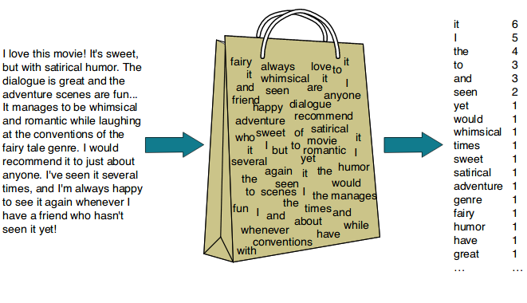

Upcoming:
UCSD Triangle Website
Finished:
Sentiment Analysis Model

https://github.com/tylercooksrice/sentiment-analysis-model
Predicting Using TF-IDF and Bag of Words (CountVectorizer) with Logistic Regression
This project performs a key analyses on Amazon Fine Foods Reviews: conducting sentiment analysis,
using two different models; TF-IDf and Bag of Words(CountVectorizer). The dataset, spanning from 1999
to 2012, contains over 500,000 reviews with features like product ID, user ID, helpfulness score,
and review text. For sentiment analysis, we used Logistic Regression with TF-IDF to classify reviews
as positive or negative based on the review text, achieving an accuracy of 87%. Compared to Bag of Words
(CountVectorizer), which achiewved an accuracy of 80%. bThe project demonstrates effective use of machine
learning models like Random Forest and Logistic Regression for text-based tasks, with optimizations to handle
large datasets and feature extraction and the postives and negatives of each respective model.
Journal App
https://github.com/cse110-sp24-group35/journal